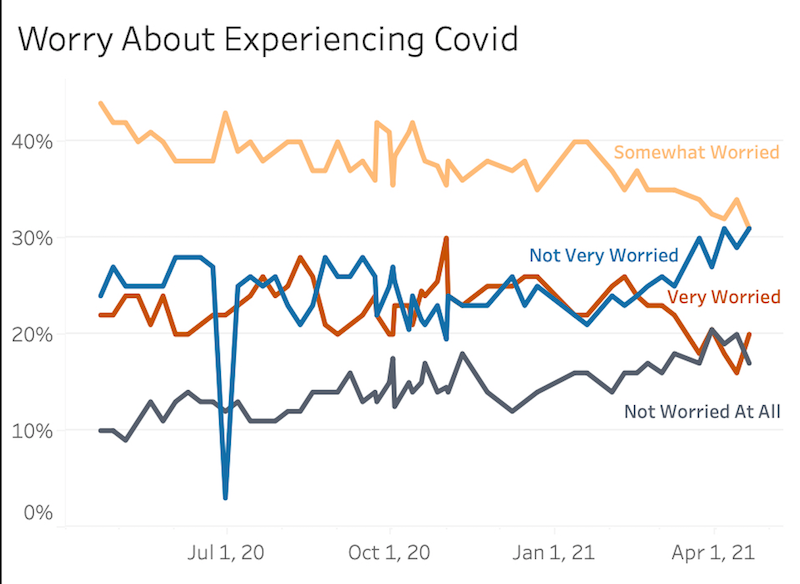

Marks and Channels
-
Marks
- Area (the map portion of the visualization)
- Points (the singular electoral votes at the bottom of the image)
-
Channels
- Color (Hue). Color here maps to a categorical attribute: whether the states' votes were republican or democrat. This is used for both the map portion and the individual electoral vote points. Color is a great way to distinguish between the two distinct ways the states could have voted, especially because republicans are already widely associated with the color red, while democrats are equivalently associated with blue.
- Shape. Shape here maps to a categorical attribute: the individual state. The shape combined with the relative position makes it clear to anyone familiar with the map of the United States which state is being colored in.
- Length. Length here maps to a sequential numerical attribute: the total numbers of votes for democrats and republicans. The length is good here for comparing between the counts for the two parties.
-
Colormap
- The colormap here is categorical with two vastly different options for states with votes going to opposing parties. As noted above, these colors map to a categorical attribute- whether the state's electoral voted were for the republican or democratic candidate. The color map is very intuitive in this visualizations as the two selected color are already mapped in society to their respective political parties. To use any other sort of color mapping in this situation would likely feel unintuitive to the user.

Marks and Channels
-
Marks
- Points
-
Channels
- Color (Hue). Color here maps to a diverging numerical attribute: the LWTS- which is negative when below the average LWTS and positive when above the average. The orange hue represents anything above 0, and purple represents anything below 0. The highly contrasting colors here are a good choice, as they clearly distinguish between the two sides of 0, and the clear white leave no confusion as to the middle ground.
- Color (Saturation). Color here maps to a diverging numerical attribute: the LWTS- which is negative when below the average LWTS and positive when above the average. The saturation of the color corresponds to HOW negative or HOW positive the LWTS score is. This is a good choice because intuitively more concentrated color would correspond to a more extreme number.
- Position (Horizontal). Horizontal Position here corresponds to a sequential numeric attribute: the balls velocity. This is a good mapping choice as numerical values like this are easy to locate on an axis.
- Position (Vertical). Vertical Position here corresponds to a diverging numeric attribute: the ball's launch angle from the horizontal (positive=above the horizontal, negative=below the horizontal). This is, similarly to the horizontal positioning, a good mapping choice as numerical values like this are easily located on an axis.
-
Colormap
- The colormap in this visualization is divergent, with two opposing colors at the extremes which converge to white when the LWTS is 0. As noted above, these colors map to a diverging numerical attribute: the LWTS. This color map is a good fit for this variable since it aligns with the also diverging numerical values of the scoring system.

Marks and Channels
-
Marks
- Lines
-
Channels
- Color (Hue). Color here maps to a categorical attribute: the worry level of respondants. The separate colors here are important for distinguishing between distinct groups, since if all lines were one color, it may be unclear which lines are which, particularly when the cross over each other.
- Position (Horizontal). Horizontal Position here corresponds to a sequential ordinal attribute: time, specifically by date. This is a good mapping choice as ordered numerical values like this are easy to follow down an axis.
- Position (Vertical). Vertical Position here corresponds to a diverging numeric attribute: the percentage of respondants who selected each worry level. This is, similarly to the horizontal positioning, sa good mapping choice as numerical values like this are easily located on an axis.
-
Colormap
- The colormap of the visualization on the left is categorical. This is a reasonably fitting color map for this visualization as the worry levels can be seen as very distinct groups. One could argue, though, that a sequential colormap may be more fitting in this case, which uses a progression of color from the least worried group to the most worried group.